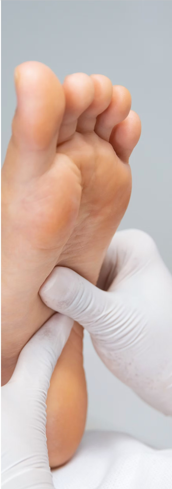
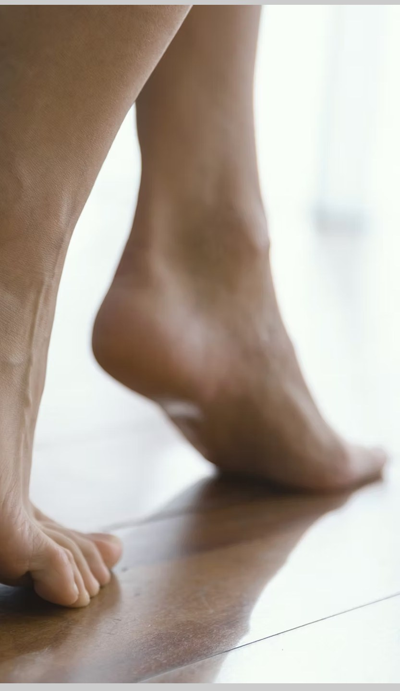
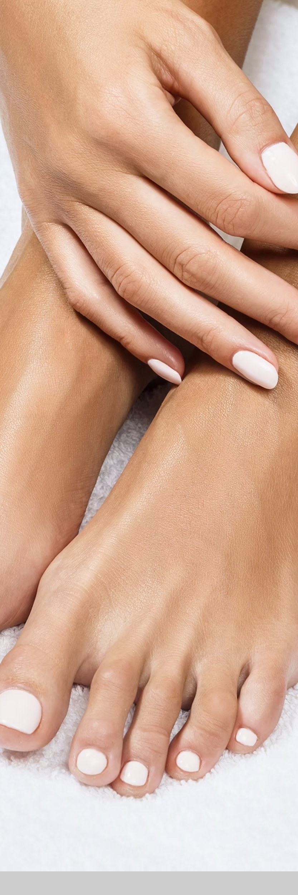

Bunion
Bunions are bone deformities that develop due to an enlargement of the joint at the base and side of your big toe. A bunion forms when your big toe moves out of place and its attached long bone rubs against your shoes. This rubbing causes persistent irritation and inflammation. It may lead to a neuroma which is an inflamed nerve.
Over time, the affected toe begins to angle toward your other toes and can even overlap the second toe. This deformity of the toe can become chronically painful and lead to other toe deformities, including hammertoe, a toe that bends due to a weakened muscle and ligament.
Bunions can be caused by; Improperly fitting shoes, trauma, neuromuscular diseases, flat feet to name a few.
How are bunions treated?
Dr. Kalvig creates a treatment plan based on the severity of your bunion and its impact on your mobility and life goals.
Dr. Kalvig focuses on relieving your pain and reducing unnecessary pressure on the joint to prevent additional enlargement. Treatment recommends may include use of protective padding to reduce friction between your toes and shoes. You also need to ensure all your shoes are the right size and wide enough to prevent pressure on your joints.
Orthotic devices that fit into your shoe can keep your foot and toes in the proper position while walking and standing. Orthotics can stabilize your joint and prevent additional mobility limitations. Orthotics are over the counter or prescription. Prescriptions are sent to a prosthetic specialist who makes them for you.
Will I need surgery for bunions?
Surgery may be a consideration if your toe joint becomes severely enlarged or deformed. A bunionectomy procedure can be performed that focuses on removing the bunion and realigning your toe joint into a normal position. Dr. Kalvig can recommend and perform this type of surgery when conventional treatments are not enough to improve your mobility and decrease your pain.

Ingrowing Toenails
Ingrown toenails, also known as onychocryptosis, is usually caused by trimming toenails too short, particularly on the sides of the big toes. They may also be caused by shoe pressure.
(From shoes that are too tight or short), injury, fungus infection, heredity, or poor foot structure. Ingrown toenails occur when the corners or sides of the toenail dig into the skin, often causing infection. A common ailment, ingrown toenails can be painful. Ingrown toenails start out hard, swollen, and tender. Left untreated, they may become sore, red, and infected and the skin may start to grow over the ingrown toenail.
In most cases, treating ingrown toenails can involve soaking the foot in warm, soapy or epsom water several times each day, avoid wearing tight shoes or socks, and proper trimming of the toenails. Antibiotics are sometimes prescribed if an infection is present. In severe cases, if an acute infection occurs, surgical removal of part of the ingrown toenail may be needed. Known as partial nail plate avulsion or matrixectomy, the procedure involves injecting the toe with an anesthetic and cutting out the ingrown part of the toenail. This procedure can give years of relief. Sometimes the nail is too deformed and maybe permanently removed all together.

Nail Fungus
Nail Fungus
Toenail fungus (also called Onychomycosis) can be difficult to manage if it is not effectively treated. Depending on the severity of the infection treatment can take months to cure due to the nature of the fungus. Treatment typically consists of topical agents.
What is toenail fungus?
Fungi are organisms that thrive in areas that are warm and moist. The area around and under your toenails can provide a perfect breeding ground for fungus, especially when you regularly wear shoes and socks, protecting the fungus as it grows. When fungus comes into contact with your foot, when you walk barefoot through a shared, damp space like a locker room or pool, for example, it can establish itself on your foot leading to Athletes foot. It can also establish itself underneath the outermost edge of your toenail. As it grows, the fungus can move under your nail. This results in changes to your nail, which can include:
- Yellowing or browning
- Thickening
- Crumbling at the edges
- Odor
Toenail fungus can affect people of all ages, but your risk for this fungal infection increases as you age.
Treatment
Typically, treatment is done with topical medications however in more severe cases surgically removing the affected part of the nail so the antifungal medication can be applied directly to the affected area may be necessary. Once the fungus is eliminated, your toenail can grow back normally and healthily.
Avoiding infection
One of the best steps you can take to avoid toenail fungus is to practice good foot hygiene. Wash your feet with soap daily and dry them thoroughly, making sure to dry between each toe. Remember, fungus likes a damp environment. Keeping your feet dry limits its ability to grow.
If you are aware your feet sweat regularly in your shoes, change your sock throughout the day to protect your feet. Also, avoid walking barefoot through any shared spaced, especially damp ones.
